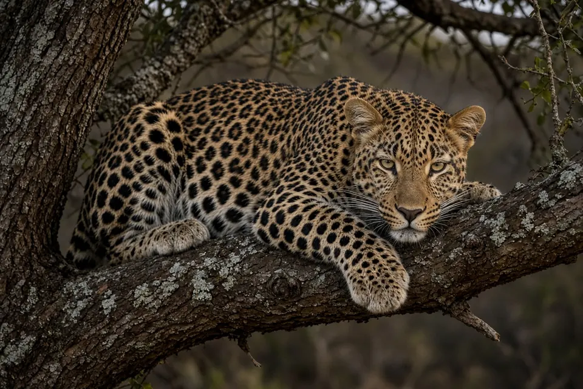

Home › Blog › What do leopards eat?
What do leopards eat? What the research on leopard diet and prey shows
Leopards eat an unusually wide range of animals, but they prefer medium sized prey of about 10 to 40 kg, such as impala, bushbuck and common duiker. A review of 33 diet studies from 13 countries found the most preferred prey weight was about 25 kg (Hayward and colleagues, 2006). Where that prey is missing, leopards switch: klipspringers and rock hyraxes in South African mountains, forest antelope and monkeys in the Congo Basin, and domestic dogs in Indian farmland.
A generalist with clear preferences
The leopard has the largest range of any big cat, from the Kalahari to the Russian Far East, and its diet reflects that. Researchers describe it as catholic: leopards will take rodents, birds, primates, antelope, wild pigs and livestock. Diet is usually measured by collecting droppings (scats) and identifying the hair and bones inside, by finding carcasses, or by visiting places where a GPS collared leopard stopped for several hours. Comparing what leopards eat with what is available shows that, despite eating almost anything, they do pick some prey over others.
Which prey do leopards prefer?
Matt Hayward and colleagues pulled together 29 published and 4 unpublished leopard diet studies that also measured how common each prey species was (Journal of Zoology, 2006). The data covered 41 locations or time periods in 13 countries. For each prey species they calculated a preference index, then tested whether leopards ate it more or less often than its abundance predicted.
- Preferred weight range: 10 to 40 kg.
- Most preferred prey mass: about 25 kg; the mean mass of significantly preferred species was 23 kg.
- Significantly preferred species: impala, bushbuck and common duiker. Chital, the spotted deer of South Asia, was likely to be preferred too, but there were too few Asian studies to be sure.
- Avoided: species outside the preferred weight range, species restricted to open vegetation, and species with strong anti-predator defences.
The authors' explanation is that leopards favour prey that lives in small herds, in dense habitat, and that carries little risk of injury during capture. They suggest the ratio of leopard body mass to preferred prey mass may reflect the leopard's solitary hunting strategy: with no pride to help, a dangerous struggle is costly. For a contrast with a much larger solitary cat, see what do tigers eat?

Leopards alongside tigers in India
In Nagarahole National Park, southern India, Ullas Karanth and Mel Sunquist studied tigers, leopards and dholes (wild dogs) hunting the same prey between 1986 and 1990 (Journal of Animal Ecology, 1995). Using scats and kills, they found that leopards and dholes focused on prey in the 30 to 175 kg size class, while tigers selected prey heavier than 176 kg. The average weight of principal prey killed by leopards was 37.6 kg, against 91.5 kg for tigers.
Leopards there were not simply eating whatever was common. Wild pigs were under-represented in leopard diet compared with their abundance. And unlike dholes, which selectively killed adult male chital, leopards did not single out adult males. The authors suggest that this kind of size-based prey selection may help large carnivores coexist where prey is plentiful.
Mountain leopards: klipspringers and hyraxes
In the Cederberg Mountains of South Africa there are no herds of impala. Quinton Martins and colleagues combined GPS collar data with scat analysis (Journal of Zoology, 2011). They located 53 kill or feeding sites from clusters of GPS locations and analysed 93 scats. Both methods agreed: klipspringers, a small rock-hopping antelope, and rock hyraxes were the most common prey.
The longer a leopard stayed at a site, the more likely researchers were to find prey remains there, and the bigger the prey tended to be. Leopards made significantly more large kills in winter than in summer, and there was no significant difference between males and females in the number of large kills. The authors stress that combining methods matters in rugged terrain, and that GPS clusters can still measure diet accurately when leopards take small prey.
Rainforest leopards: antelope and monkeys
In the Ituri Forest of what was then Zaire, now the Democratic Republic of the Congo, John Hart and colleagues studied the diets of leopards and African golden cats from 336 scats and 91 prey carcasses (African Journal of Ecology, 1996). Mammals made up almost all prey. In leopard scats, ungulates were 53.5% of identified prey items and primates 25.4%, with an estimated mean prey weight of 24.6 kg. That figure sits remarkably close to the 25 kg preference found in the later continental review.
Among prey of 5 kg or more, the forest cats selected five species of nocturnal ungulates and one ground-living primate. Arboreal monkeys made up 9% of prey items in the cats' scats, and the authors suggest that scavenging kills made by crowned eagles may be one way forest cats get them. They also proposed that leopards in many forested areas of Africa may be limited by competition with human hunters for the same hoofed prey.
Leopards in farmland: dogs and other domestic animals
Leopards can live surprisingly close to people, and their diet changes accordingly. In crop lands of Ahmednagar district, Maharashtra, India, Vidya Athreya and colleagues analysed 85 confirmed leopard scats (Oryx, 2016). Domestic animals made up 87% of the prey biomass eaten, and domestic dogs alone made up 39%. The only wild prey found were rodents, small Indian civets, bonnet macaques and other primates, mongooses and birds.
Household interviews showed goats and cattle were far more numerous than dogs, yet dogs and cats were over-represented in the leopards' diet. The authors note that the dogs and cats alone provided enough biomass to sustain the high density of carnivores in the area, although this reliance on domestic animals can bring leopards into conflict with people. For more on this, see can leopards live near people?
Why diet matters for leopard conservation
Knowing which prey leopards prefer lets wildlife managers predict leopard diet where it has not been studied and estimate how many predators an area can carry, uses Hayward and colleagues highlight. It also shows where conflict is likely: where wild prey is scarce and domestic animals are plentiful, leopards can come to depend on livestock and pets. Protecting medium sized wild prey is part of protecting leopards. Leopards also guard kills from lions and hyenas by hoisting them into trees; read why do leopards drag their kills into trees? and our leopard facts page.
Key takeaways
- Across 33 studies, leopards preferred prey of 10 to 40 kg, with about 25 kg most preferred (Hayward et al. 2006).
- Impala, bushbuck and common duiker were significantly preferred; prey restricted to open habitat or with strong defences was generally avoided (Hayward et al. 2006).
- In Nagarahole, India, leopards' principal prey averaged 37.6 kg, much smaller than tigers' 91.5 kg (Karanth and Sunquist 1995).
- In South African mountains, klipspringers and rock hyraxes were the most common prey (Martins et al. 2011).
- In Congo rainforest, ungulates were 53.5% and primates 25.4% of prey items in leopard scats (Hart et al. 1996).
- In Indian farmland, 87% of prey biomass was domestic animals, with dogs alone 39% (Athreya et al. 2016).
Frequently asked questions
What is a leopard's favourite food?
Across 33 studies, impala, bushbuck and common duiker were the prey leopards significantly preferred, and chital deer were likely preferred in Asia (Hayward et al. 2006).
How big are the animals leopards hunt?
Leopards prefer prey of 10 to 40 kg, with about 25 kg most preferred (Hayward et al. 2006). In Nagarahole, India, their principal prey averaged 37.6 kg (Karanth and Sunquist 1995).
Do leopards eat monkeys?
Yes. In the Ituri Forest, primates made up 25.4% of identified prey items in leopard scats (Hart et al. 1996), and bonnet macaques were among the few wild prey of leopards in Maharashtra farmland (Athreya et al. 2016).
Do leopards eat dogs?
Where they live near people, they can. In farmland in Maharashtra, India, domestic dogs made up 39% of the prey biomass in leopard scats (Athreya et al. 2016).
Do leopards and tigers eat the same prey?
They overlap, but in Nagarahole, India, tigers selected prey over 176 kg while leopards focused on prey of 30 to 175 kg (Karanth and Sunquist 1995).
Cite this page
APA: BigCatWise. (2026, November 1). What do leopards eat?. https://bigcatwise.com/blog/what-do-leopards-eat.html
MLA: "What do leopards eat?." BigCatWise, 1 Nov. 2026, bigcatwise.com/blog/what-do-leopards-eat.html.
Chicago: BigCatWise. "What do leopards eat?." Last modified November 1, 2026. https://bigcatwise.com/blog/what-do-leopards-eat.html.
Please check the date you accessed the page and adjust to your teacher's or journal's style guide.
Sources
- Hayward, Henschel, O'Brien, Hofmeyr, Balme and Kerley (2006) Prey preferences of the leopard (Panthera pardus), Journal of Zoology 270(2): 298-313. DOI 10.1111/j.1469-7998.2006.00139.x
- Karanth and Sunquist (1995) Prey selection by tiger, leopard and dhole in tropical forests, Journal of Animal Ecology 64(4): 439-450. DOI 10.2307/5647
- Martins, Horsnell, Titus, Rautenbach and Harris (2011) Diet determination of the Cape Mountain leopards using global positioning system location clusters and scat analysis, Journal of Zoology 283(2): 81-87. DOI 10.1111/j.1469-7998.2010.00757.x
- Hart, Katembo and Punga (1996) Diet, prey selection and ecological relations of leopard and golden cat in the Ituri Forest, Zaire, African Journal of Ecology 34(4): 364-379. DOI 10.1111/j.1365-2028.1996.tb00632.x
- Athreya, Odden, Linnell, Krishnaswamy and Karanth (2016) A cat among the dogs: leopard Panthera pardus diet in a human-dominated landscape in western Maharashtra, India, Oryx 50(1): 156-162. DOI 10.1017/S0030605314000106
- IUCN SSC Cat Specialist Group: Leopard
Figures are rounded summaries of the sources above. Wild populations are hard to count, so estimates change as new surveys are published.